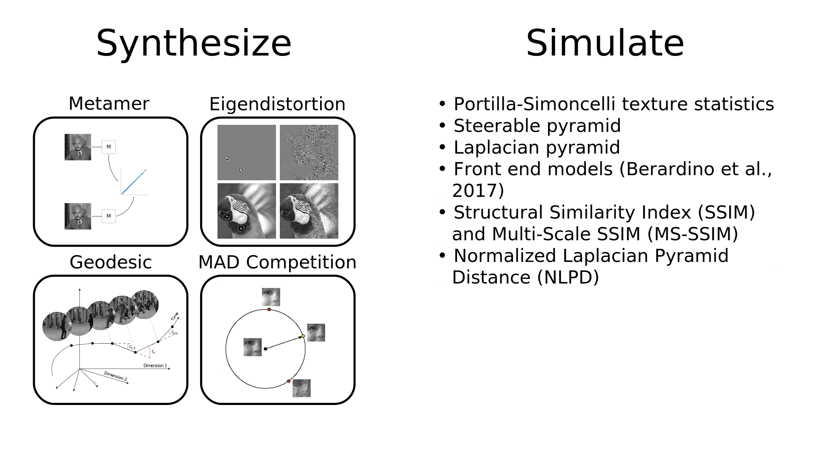

CCN Salon
Billy Broderick
August 11, 2023
Who am I?
- PhD: NYU Center for Neural Science, May 2022
- Advisors: Eero Simoncelli and Jonathan Winawer
- Research focus: how vision changes across the visual field, using fMRI, psychophysics, and computational models
- Fell down the open source / open science rabbit hole

Simulate responses

Fit parameters

Synthesize stimuli

Metamers
- Physically distinct stimuli that are perceptually identically
Metamers

Metamers
Metamers
- Physically distinct stimuli that are perceptually identically
Metamers
- Physically distinct stimuli that are perceptually identically (to a computational model)
Contents

Why do this?
- Improve understanding of computational models
- Image space is vast!
- Better understand single model or compare between competing models
Status and Roadmap
- All methods, models are implemented
- Currently improving geodesics
- Working on improving tutorials and documentation, cleaning up code base
- Looking for feedback and users!
Developers
Developers
Website
How write software?
- How do I make my package pip installable? (i.e.,
pip install my_awesome_package) - What’s the difference between
requirements.txt,environment.yml,setup.py, andpyproject.tomland which should I use? - How do I get up on the Python package index (https://pypi.org)?
- How do I make this work on other operating systems?
- How do I automatically compile the C code my Python function uses?
- How do I tell people how to use my code?
- How do I get that information up on a website?
- How do I make sure my code actually works?
- How do I write code with other people?
Events
- Fall 2023:
- pynapple McGill workshop
- MIT Open Neurophysiology Symposium (DANDI, Miniscope, NWB, DataJoint, etc.)
- US Research Software Engineer Association Conference (1st annual!)
- Caiman workshop at Society for Neuroscience conference (for users)
- Spring 2024:
- CaImAn code spring at Flatiron (for contributors)
- Open source systems neuroscience workshop? at Computational and Systems Neuroscience conference (Cosyne)
- plenoptic workshop? at Vision Science Society conference (VSS)
- pynapple + CaImAn workshop? at Federation of European Neuroscience Societies (FENS)
- Summer 2024:
- Interns!